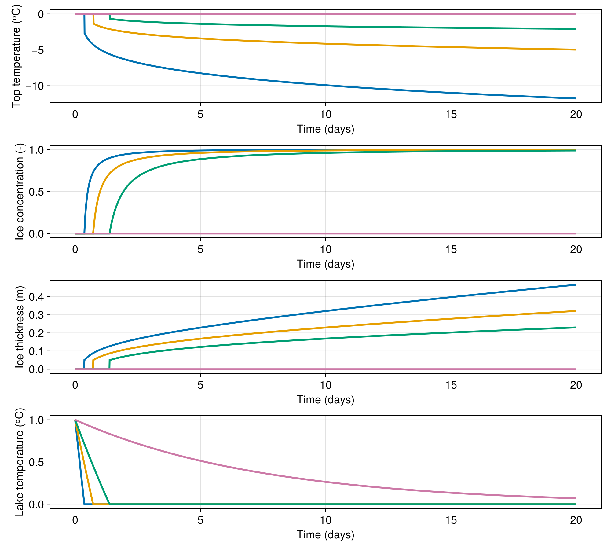
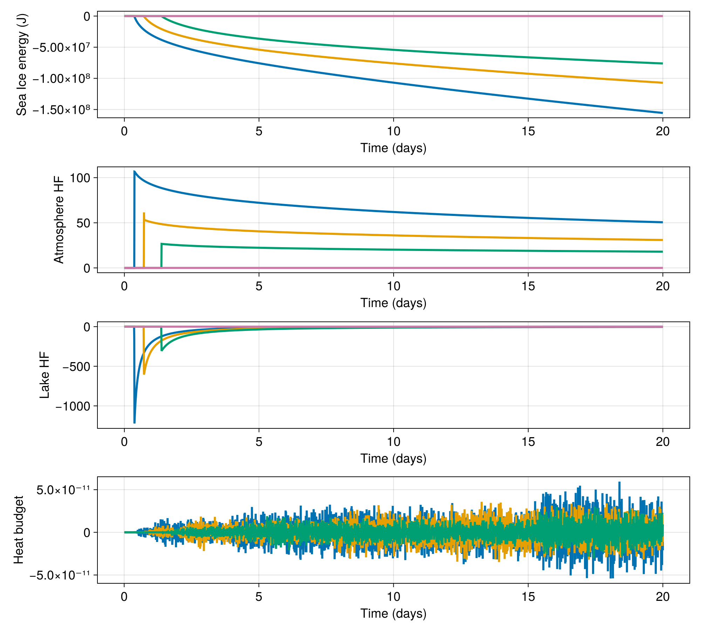

Freezing of a lake
In this example we simulate the freezing of a lake in winter. The lake is represented by four points that start at 1ᵒC and are cooled down by an atmosphere with temperatures of -20, -10, -1, and -0.1ᵒC. The lake is 10 m deep and not subjected to radiative transfer (this lake is covered in a wind tunnel under which we blow some cold air).
We start by using Oceananigans to bring in functions for building grids and Simulations and the like.
using Oceananigans
using Oceananigans.Units
using ClimaSeaIce
using ClimaSeaIce.SeaIceThermodynamics: latent_heat
using CairoMakieGenerate a 1D grid for difference ice columns subject to different solar insolation
grid = RectilinearGrid(size=4, x=(0, 1), topology=(Periodic, Flat, Flat))4×1×1 RectilinearGrid{Float64, Oceananigans.Grids.Periodic, Oceananigans.Grids.Flat, Oceananigans.Grids.Flat} on Oceananigans.Architectures.CPU with 3×0×0 halo
├── Periodic x ∈ [0.0, 1.0) regularly spaced with Δx=0.25
├── Flat y
└── Flat z The sensible heat flux from the atmosphere is represented by a FluxFunction.
atmosphere = (
transfer_coefficient = 1e-3, # Unitless
atmosphere_density = 1.225, # kg m⁻³
atmosphere_heat_capacity = 1004, #
atmosphere_temperature = [-20, -10, -5, 0], # ᵒC
atmosphere_wind_speed = 5, # m s⁻¹
atmosphere_ice_flux = [0.0, 0.0, 0.0, 0.0], # W m⁻²
)(transfer_coefficient = 0.001, atmosphere_density = 1.225, atmosphere_heat_capacity = 1004, atmosphere_temperature = [-20, -10, -5, 0], atmosphere_wind_speed = 5, atmosphere_ice_flux = [0.0, 0.0, 0.0, 0.0])Flux is positive (cooling by fluxing heat up away from upper surface) when Tₐ < Tᵤ:
@inline function sensible_heat_flux(i, j, grid, Tᵤ, clock, fields, atmosphere)
Cₛ = atmosphere.transfer_coefficient
ρₐ = atmosphere.atmosphere_density
cₐ = atmosphere.atmosphere_heat_capacity
Tₐ = atmosphere.atmosphere_temperature[i]
uₐ = atmosphere.atmosphere_wind_speed
ℵ = fields.ℵ[i, j, 1]
Qₐ = atmosphere.atmosphere_ice_flux
Qₐ[i] = ifelse(ℵ == 0, zero(grid), Cₛ * ρₐ * cₐ * uₐ * (Tᵤ - Tₐ))
return Qₐ[i]
endsensible_heat_flux (generic function with 1 method)We also evolve a bucket freshwater lake that cools down and freezes from below generating fresh sea-ice (or lake-ice in this case?). We set the Δt of the lake to 10 minutes. This time step will be used to also for the sea-ice model.
lake = (
lake_density = 1000, # kg m⁻³
lake_heat_capacity = 4000, #
lake_temperature = [1.0, 1.0, 1.0, 1.0], # ᵒC
lake_depth = 10, # m
lake_ice_flux = [0.0, 0.0, 0.0, 0.0], # W m⁻²
atmosphere_lake_flux = [0.0, 0.0, 0.0, 0.0], # W m⁻²
Δt = 10minutes
)(lake_density = 1000, lake_heat_capacity = 4000, lake_temperature = [1.0, 1.0, 1.0, 1.0], lake_depth = 10, lake_ice_flux = [0.0, 0.0, 0.0, 0.0], atmosphere_lake_flux = [0.0, 0.0, 0.0, 0.0], Δt = 600.0)We build a flux function that serves three purposes:
- computing the cooling of the lake caused by the atmosphere
- If the lake temperature is low enough, freezing the lake from above
- and adding the heat flux to the bottom of the ice
@inline function advance_lake_and_frazil_flux(i, j, grid, Tuᵢ, clock, fields, parameters)
atmos = parameters.atmosphere
lake = parameters.lake
Cₛ = atmos.transfer_coefficient
ρₐ = atmos.atmosphere_density
cₐ = atmos.atmosphere_heat_capacity
Tₐ = atmos.atmosphere_temperature[i]
uₐ = atmos.atmosphere_wind_speed
Tₒ = lake.lake_temperature
cₒ = lake.lake_heat_capacity
ρₒ = lake.lake_density
Δ = lake.lake_depth
Δt = lake.Δt
ℵ = fields.ℵ[i, j, 1]
Qᵗ = lake.atmosphere_lake_flux
Qᵇ = lake.lake_ice_flux
Qₐ = Cₛ * ρₐ * cₐ * uₐ * (Tₐ - Tₒ[i]) * (1 - ℵ)
Tₒ[i] = Tₒ[i] + Qₐ / (ρₒ * cₒ) * Δt
Qᵢ = ρₒ * cₒ * (Tₒ[i] - 0) / Δt * Δ # W m⁻²
Qᵢ = min(Qᵢ, zero(Qᵢ)) # We only freeze, not melt
Tₒ[i] = ifelse(Qᵢ == 0, Tₒ[i], zero(Qᵢ))
Qᵗ[i] = Qₐ
Qᵇ[i] = Qᵢ
return Qᵢ
end
top_heat_flux = FluxFunction(sensible_heat_flux; parameters=atmosphere)
bottom_heat_flux = FluxFunction(advance_lake_and_frazil_flux; parameters=(; lake, atmosphere))
model = SeaIceModel(grid;
ice_consolidation_thickness = 0.05, # m
top_heat_flux,
bottom_heat_flux)SeaIceModel{Oceananigans.Architectures.CPU, Oceananigans.Grids.RectilinearGrid}(time = 0 seconds, iteration = 0)
├── grid: 4×1×1 RectilinearGrid{Float64, Oceananigans.Grids.Periodic, Oceananigans.Grids.Flat, Oceananigans.Grids.Flat} on Oceananigans.Architectures.CPU with 3×0×0 halo
├── ice_thermodynamics: SlabThermodynamics
├── advection: Nothing
└── external_heat_fluxes:
├── top: FluxFunction of sensible_heat_flux with parameters (transfer_coefficient=0.001, atmosphere_density=1.225, atmosphere_heat_capacity=1004, atmosphere_temperature=4-element Vector{Int64}, atmosphere_wind_speed=5, atmosphere_ice_flux=4-element Vector{Float64})
└── bottom: FluxFunction of advance_lake_and_frazil_flux with parameters (lake=(lake_density=1000, lake_heat_capacity=4000, lake_temperature=4-element Vector{Float64}, lake_depth=10, lake_ice_flux=4-element Vector{Float64}, atmosphere_lake_flux=4-element Vector{Float64}, Δt=600.0), atmosphere=(transfer_coefficient=0.001, atmosphere_density=1.225, atmosphere_heat_capacity=1004, atmosphere_temperature=4-element Vector{Int64}, atmosphere_wind_speed=5, atmosphere_ice_flux=4-element Vector{Float64}))We initialize all the columns with open water (0 thickness and 0 concentration)
set!(model, h=0, ℵ=0)
simulation = Simulation(model, Δt=lake.Δt, stop_time=20days)Simulation of SeaIceModel
├── Next time step: 10 minutes
├── Elapsed wall time: 0 seconds
├── Wall time per iteration: NaN days
├── Stop time: 20 days
├── Stop iteration: Inf
├── Wall time limit: Inf
├── Minimum relative step: 0.0
├── Callbacks: OrderedDict with 3 entries:
│ ├── stop_time_exceeded => Callback of stop_time_exceeded on IterationInterval(1)
│ ├── stop_iteration_exceeded => Callback of stop_iteration_exceeded on IterationInterval(1)
│ └── wall_time_limit_exceeded => Callback of wall_time_limit_exceeded on IterationInterval(1)
├── Output writers: OrderedDict with no entries
└── Diagnostics: OrderedDict with no entriesThe data is accumulated in a timeseries for visualization.
timeseries = []
function accumulate_timeseries(sim)
T = model.ice_thermodynamics.top_surface_temperature
h = model.ice_thickness
ℵ = model.ice_concentration
To = lake.lake_temperature
push!(timeseries, (time(sim),
h[1, 1, 1], ℵ[1, 1, 1], T[1, 1, 1],
h[2, 1, 1], ℵ[2, 1, 1], T[2, 1, 1],
h[3, 1, 1], ℵ[3, 1, 1], T[3, 1, 1],
h[4, 1, 1], ℵ[4, 1, 1], T[4, 1, 1],
To[1], To[2], To[3], To[4]))
end
simulation.callbacks[:save] = Callback(accumulate_timeseries)Callback of accumulate_timeseries on IterationInterval(1)accumulate energy
Ei = []
Qa = []
Ql = []
function accumulate_energy(sim)
h = sim.model.ice_thickness
ℵ = sim.model.ice_concentration
PT = sim.model.ice_thermodynamics.phase_transitions
ℰ = latent_heat(PT, 0) # ice is at 0ᵒC
push!(Ei, deepcopy(@. - h * ℵ * ℰ))
push!(Qa, deepcopy(atmosphere.atmosphere_ice_flux))
push!(Ql, deepcopy(lake.lake_ice_flux))
end
simulation.callbacks[:save] = Callback(accumulate_timeseries)
simulation.callbacks[:energy] = Callback(accumulate_energy)
run!(simulation)[ Info: Initializing simulation...
[ Info: ... simulation initialization complete (5.866 seconds)
[ Info: Executing initial time step...
[ Info: ... initial time step complete (1.461 seconds).
[ Info: Simulation is stopping after running for 7.990 seconds.
[ Info: Simulation time 20 days equals or exceeds stop time 20 days.Extract and visualize data
t = [datum[1] for datum in timeseries]
h1 = [datum[2] for datum in timeseries]
ℵ1 = [datum[3] for datum in timeseries]
T1 = [datum[4] for datum in timeseries]
h2 = [datum[5] for datum in timeseries]
ℵ2 = [datum[6] for datum in timeseries]
T2 = [datum[7] for datum in timeseries]
h3 = [datum[8] for datum in timeseries]
ℵ3 = [datum[9] for datum in timeseries]
T3 = [datum[10] for datum in timeseries]
h4 = [datum[11] for datum in timeseries]
ℵ4 = [datum[12] for datum in timeseries]
T4 = [datum[13] for datum in timeseries]
L1 = [datum[14] for datum in timeseries]
L2 = [datum[15] for datum in timeseries]
L3 = [datum[16] for datum in timeseries]
L4 = [datum[17] for datum in timeseries]
set_theme!(Theme(fontsize=18, linewidth=3))
fig = Figure(size=(1000, 900))
axT = Axis(fig[1, 1], xlabel="Time (days)", ylabel="Top temperature (ᵒC)")
axℵ = Axis(fig[2, 1], xlabel="Time (days)", ylabel="Ice concentration (-)")
axh = Axis(fig[3, 1], xlabel="Time (days)", ylabel="Ice thickness (m)")
axL = Axis(fig[4, 1], xlabel="Time (days)", ylabel="Lake temperature (ᵒC)")
lines!(axT, t / day, T1)
lines!(axℵ, t / day, ℵ1)
lines!(axh, t / day, h1)
lines!(axL, t / day, L1)
lines!(axT, t / day, T2)
lines!(axℵ, t / day, ℵ2)
lines!(axh, t / day, h2)
lines!(axL, t / day, L2)
lines!(axT, t / day, T3)
lines!(axℵ, t / day, ℵ3)
lines!(axh, t / day, h3)
lines!(axL, t / day, L3)
lines!(axT, t / day, T4)
lines!(axℵ, t / day, ℵ4)
lines!(axh, t / day, h4)
lines!(axL, t / day, L4)
save("freezing_in_winter.png", fig)
Extract and visualize energy
Ei1 = [datum[1] for datum in Ei]
Qa1 = [datum[1] for datum in Qa]
Ql1 = [datum[1] for datum in Ql]
Ei2 = [datum[2] for datum in Ei]
Qa2 = [datum[2] for datum in Qa]
Ql2 = [datum[2] for datum in Ql]
Ei3 = [datum[3] for datum in Ei]
Qa3 = [datum[3] for datum in Qa]
Ql3 = [datum[3] for datum in Ql]
Ei4 = [datum[4] for datum in Ei]
Qa4 = [datum[4] for datum in Qa]
Ql4 = [datum[4] for datum in Ql]
fig = Figure(size=(1000, 900))
axE = Axis(fig[1, 1], xlabel="Time (days)", ylabel="Sea Ice energy (J)")
axA = Axis(fig[2, 1], xlabel="Time (days)", ylabel="Atmosphere HF")
axL = Axis(fig[3, 1], xlabel="Time (days)", ylabel="Lake HF")
axB = Axis(fig[4, 1], xlabel="Time (days)", ylabel="Heat budget")
dEi1 = (Ei1[2:end] - Ei1[1:end-1]) ./ 10minutes
dEi2 = (Ei2[2:end] - Ei2[1:end-1]) ./ 10minutes
dEi3 = (Ei3[2:end] - Ei3[1:end-1]) ./ 10minutes
dEi4 = (Ei4[2:end] - Ei4[1:end-1]) ./ 10minutes
tpE = t[2:end]
lines!(axE, t / day, Ei1)
lines!(axA, t / day, Qa1)
lines!(axL, t / day, Ql1)
lines!(axE, t / day, Ei2)
lines!(axA, t / day, Qa2)
lines!(axL, t / day, Ql2)
lines!(axE, t / day, Ei3)
lines!(axA, t / day, Qa3)
lines!(axL, t / day, Ql3)
lines!(axE, t / day, Ei4)
lines!(axA, t / day, Qa4)
lines!(axL, t / day, Ql4)
lines!(axB, tpE / day, dEi1 .- (.- Qa1 .+ Ql1)[2:end])
lines!(axB, tpE / day, dEi2 .- (.- Qa2 .+ Ql2)[2:end])
lines!(axB, tpE / day, dEi3 .- (.- Qa3 .+ Ql3)[2:end])
save("energy_budget.png", fig)
This page was generated using Literate.jl.